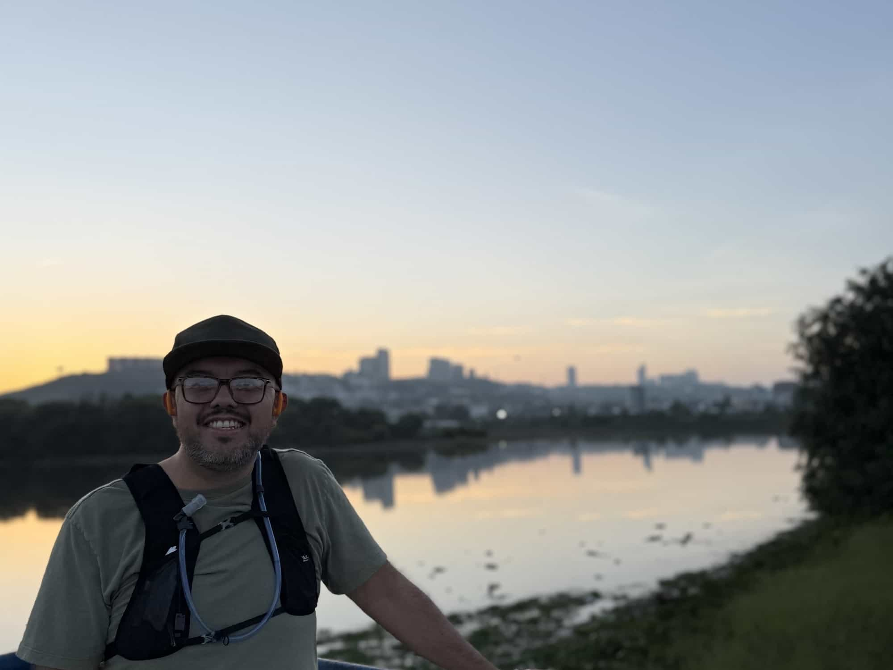

Jose Roberto Hernandez Peña | WDD 130
Hi, my Name is Roberto Hernandez. I am from México City, and currently live in Querétaro, México. I work as a Data Analyst in a worldwide nutrition company. I enjoy running, cooking and listening music.
Hi, my Name is Roberto Hernandez. I am from México City, and currently live in Querétaro, México. I work as a Data Analyst in a worldwide nutrition company. I enjoy running, cooking and listening music.